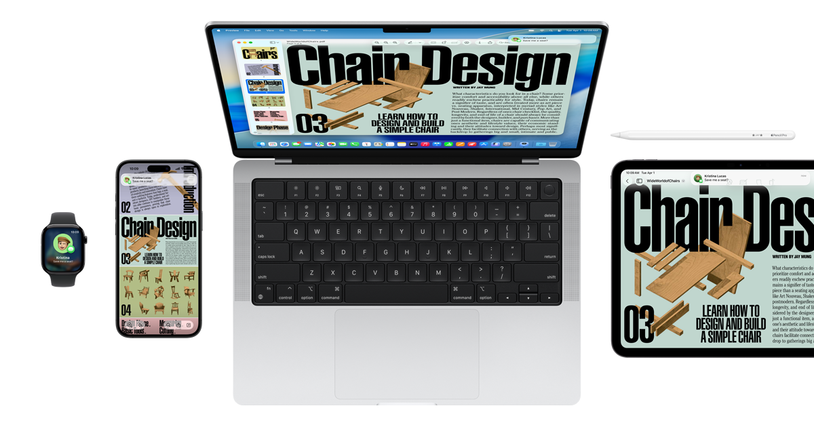

I've always heard people say that "with Apple devices, everything just works." and I never really believed it, well how and what works exactly? I kept telling myself about that, as a person that knows how to operate both Android and iOS, and daily driving an Android back then, I always thought to myself "but iOS and Apple devices are just inferior! They don't have as many features and customizability built in? How does everything work?!” And I was proven wrong.

The setup is very straightforward, it starts with you signing into the new device and then the new device will boot either as a continuation of your current phone or a brand new experience if you choose not to transfer.
Continuity is a very big deal with Apple and how each device works alongside each other.

Features like Universal Clipboard let's you copy a text, image, or a content from your Mac to your iPhone or iPad, just paste using another device whenever it's nearby!
This is more or less in the umbrella of Continuity as a whole.
One device to another without any settings, and everything just works. If you are wearing AirPods and consuming media on your iPad, and you decide to take a call using your iPhone, your AirPods have the ability to switch audio inputs from iPad to iPhone, all without a hiccup.
And of course, let's not forget the hardware and how it is designed and how software engineers worked in order to make hardware and software seamless.

The camera app on an iPhone has always been my favorite, aside from the exceptional quality it produces, the design and how immersive it is also plays a role, Apple's software engineers never miss out, that's one thing they always do. In the camera app, you are greeted with a full screen experience of the viewfinder, but what you see is a combination of the ultra-wide camera and the main camera working in tandem. This feature is called "View Outside the Frame", the ultra-wide camera acts as a peripheral vision of what the other camera sees, while the main camera is in the center and only captures what's inside the frame! It really is a nice implementation of the viewfinder. It also gives a zero-lag camera transition as the cameras are already active.

And the infamous Dynamic Island, the very obvious. With the OLED displays of iPhones and the pill shaped cut out, Apple of course did their thing where they sprinkle the system alerts into the pill, and it also uses the Live Activities API which lets apps display relevant information that is present. We pretty much know all of this by now, all about Dynamic Island, but it's so fluid and integrated that even if it expands as it displays information, it just feels natural.
Apple devices has always shown that the integration of hardware and software can create a seamless and intuitive user experience. And although it might seem a little biased coming from my experience, it's undeniable that the synergy between hardware and software is what makes Apple devices so special.